– 2023 Edition –
Many questions are being asked today about the environmental impact of the press and digital media. Beyond the contents, advertising and data tracking are integrated both to satisfy the economic requirements of a free or semi-free model and to better know the user to better serve him (center of interest). Moreover, the press and media often use rich content to illustrate their articles (videos, images …). All this often implies an overconsumption of digital titles at each passage of a reader.
A year ago, we have realized a ranking of the carbon impact of the top 100 most visited websites of the French daily press on mobile. Its objective was to quantify the impact of the online press via mobile. Indeed, this impact is becoming more and more important every year.
For this new ranking, we decided to reduce the study to 30 sites and to evolve our approach, taking into account one article per site (dated 13/04/2023) in addition to the homepage. This is all the more interesting because users spend most of their time on the articles.
We based ourselves on the ranking of the ACPM site (made according to last year’s filters: Fixed Web Site News / News Information / General Information). The benchmarks were performed with a Samsung Galaxy S9 without Sim card and with 3 iterations. The measurements were performed in March and April 2023.
Condensed Results
Less impactful homepages :
- Le Monde
- Actu.fr
- Ouest-France
Most impactful homepages :
- Rfi
- france24
- L’Est Républicain
Less impactful articles pages:
- Huffingtonpost
- Actu.fr
- France Info
Most impactful articles pages :
- Sud Ouest
- la Nouvelle République
- Rfi
Here is the list of sites on which the study is based:
INSERT TAB
Discover the Greenspector analysis methodology.
Limitations of the measure
One of the problems encountered concerns the methods of access to content. Indeed, some articles are much shorter because their complete access is paying. 25% of the sites in the ranking are concerned. This influences the results of the benchmark for these websites by indirectly benefiting sites that restrict access to their content.
Also, some sites are only partially loaded until the user has made his choice for the data collection consent popup (RGPD). This does not necessarily prevent scrolling on the page. More generally, we can only regret that such artifices are detrimental to the user experience.
In particular, this is what we see on the first ranking for home pages (Le Monde).
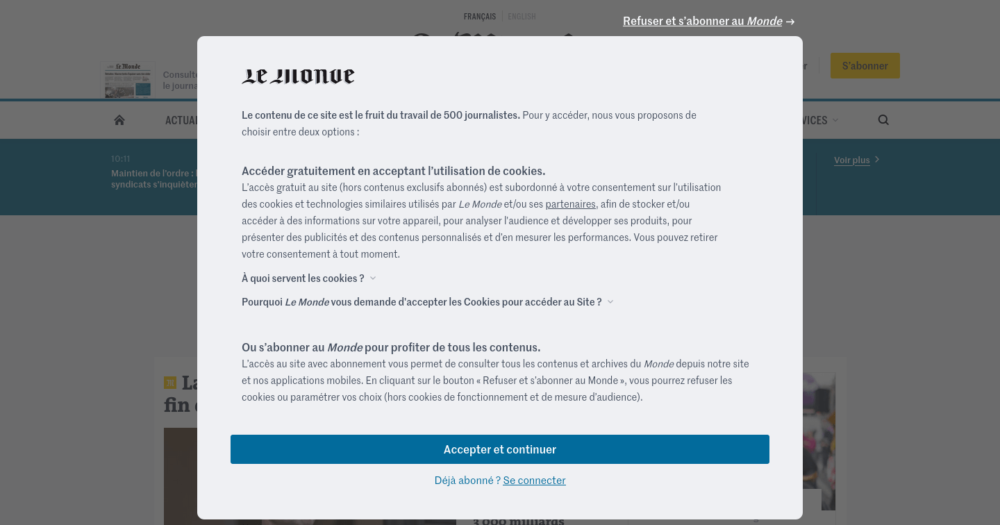
Here is for example the RequestMap (a tool created by Simon Hearne) for lemonde.fr with the requests seen by the measurement tool (Greenspector, Webpagetest or other) we can see that there are few requests and third party services at first sight :
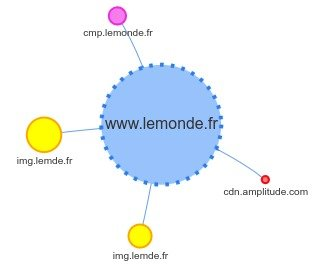
Here is for comparison the complete RequestMap for lemonde.fr, built from a HAR file obtained via Chrome after acceptance of all cookies by the user:
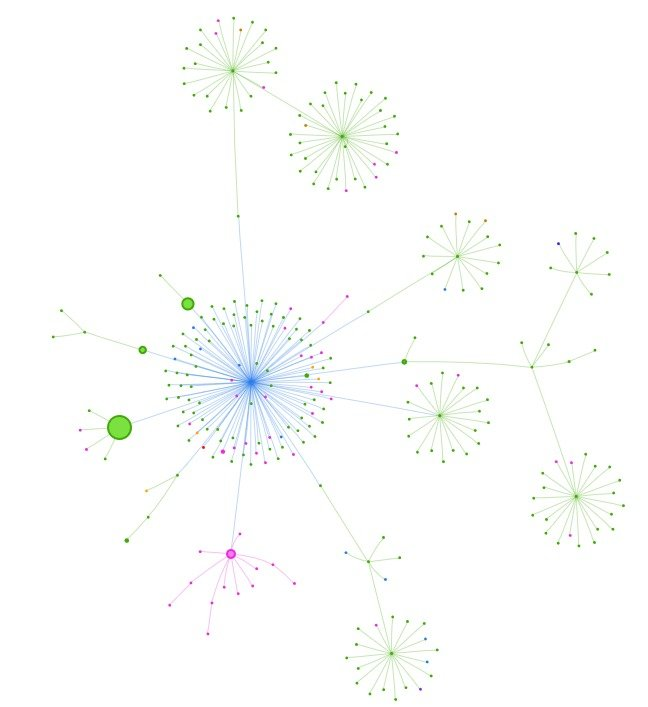
It thus appears that the data transferred and requests made are multiplied after the Internet user’s consent has been obtained. This phenomenon is observed on a large number of similar sites. Here are some additional resources on online advertising, closely related to the online press:
- How the whole bubble around microtargeting and especially online advertising could burst: https://www.wired.com/story/ad-tech-could-be-the-next-internet-bubble/
- How many ads we see every day (the result will surprise you. Or not, unfortunately): https://www.gradschools.com/degree-guide/how-many-ads-do-you-see-each-day
- Why the technical integration of ads on sites is still so problematic: https://schepp.dev/posts/ad-integration-in-2020/
- The environmental impact of ads and stats collection: https://marmelab.com/blog/2022/01/17/media-websites-carbon-emissions.html
- The links between cookies, online advertising and the online press: https://www.wired.com/story/can-killing-cookies-save-journalism/
What we have to remember today is that the results of the measurements proposed here (and via other tools available elsewhere) offer a sometimes truncated vision of the reality of online press sites. However, we already have here a good overview of what could be improved on some of these sites and their respective impacts.
Analysis of the results at the global level
For the home pages of the 30 sites measured, the average carbon impact per page and per minute is 0.44 gEqCO2. This average is 0.42 gEqCO2 for the articles.
On the analysis of home pages, 19 sites are positioned below this average. While on the measurement of the articles, 23 sites are below.
We noticed a difference in results between the 7 sites offering restricted access to their articles (sometimes paying or obligation to create an account to continue reading) and the 23 others where the articles are 100% accessible.
The home pages with restricted access have an average impact of 0.42gEqCO2. For the free access sites, the average impact on the home pages is 0.44 gEqCO2.
This difference is explained by the display of numerous advertisements on some sites with free content, which considerably weigh down the pages.
Due to a richer content, the home pages consume in general slightly more than the articles (we notice an increase of more than 0.02 gEqCO2 on average).
Here is a synthesis of the different metrics measured on the home pages of this ranking of the Press websites consulted on mobile :
| Metrics | Average | Minimum | Maximum |
| CO2 impact per page / min en gEqCO2 | 0.44 | 0.26 | 1.10 |
| Ecoscore Greenspector | 54 | 31 | 72 |
| Energy consumed in mAh | 7.2 | 4.58 | 21.98 |
| Data exchanged en Mo | 2.63 | 0.68 | 7,27 |
| Number of web requests | 76 | 30 | 169 |
If we compare these results with our previous analysis on homepages, we can see a slight degradation of the results with an average of 53 for the ecoscore against 54 today. On average, the three metrics of data energy consumed and number of requests have decreased. The energy consumed by the homepages went from 4.22 mAh on average to 7.2 mAh, the data consumed went from 2.31 MB to 3.63 MB, and the number of requests from 78 to 76.
Here is a synthesis of the different metrics measured on the article pages of this ranking of press websites consulted on mobile:
| Metrics | Average | Minimum | Maximum |
| CO2 impact per page / min in gEqCO2 | 0.37 | 0.21 | 1.19 |
| Ecoscore Greenspector | 58 | 24 | 75 |
| Energy consumed in mAh | 7.15 | 4.62 | 21,26 |
| Data exchanged in Mo | 4.52 | 0.58 | 31.42 |
| Number of web requests | 66 | 26 | 213 |
For the study, these articles were compared with articles coming from the same press sites and dating from 05/07/2022. The result is quite negative because we can see on average a lower Ecoscore on the recent articles with a score of 58 contrary to 59 for the articles of 05/07/2022. The energy consumed by these pages has also increased from 6.58 mAh in July 2022 to 7.15mAh for the articles of April 2023. Similarly, the volume of data exchanged increased from 3.46MB in July 2022 to 4.52MB for the April 2023 articles. On the other hand, we can observe a lower CO2 equivalent impact for the April 2023 articles with a score of 0.37 gEqCO2 and 0.42 gEqCO2 for the July 2022 articles. Similarly, we can see an improvement on the number of requests exchanged from 68 on average for the July 2022 articles to 66 for the April 2023 articles.
Home pages
Top 3 (least impactful home pages)
1st
Le Monde gets the first place thanks to its efforts to reduce the environmental impact of its website. We notice a good application of sobriety practices, especially on the management of images. Also, data and requests are optimized thanks to the progressive loading of the page. Thus, the content is loaded only when it becomes visible. That said, the site can still be improved in terms of third-party services that are not detected in the measurements and yet are very present. Indeed, the collection of data after the acceptance of cookies increases considerably the number of requests to third party services (see above) and has previously raised concerns about privacy and security.
2nd
Actu.fr
The web page uses progressive page loading. This allows to limit the number of requests. Moreover, actu.fr uses mostly the right formats for its images. However, actu.fr is invaded by advertising. This reduces the accessibility for the users and increases the number of requests considerably. As for the first ranking, the measurements only took into account what happens before cookies are accepted.
3rd
Ouest-France
Ouest- France loads its page progressively and uses a very good image format, like AVIF or Webp. However, advertising increases the number of requests, thus increasing the environmental impact of the site. The measurements here are also limited to what happens before accepting cookies.
Conclusion for the top 3 homepages
We can notice that the top 3 use the best practices of progressive page loading and image formats. However, the measurements were done via the cookie page and, if we take a closer look, we can see that these sites use a lot of ads. This considerably increases the number of requests to third party sites and therefore the environmental impact.
Flop 3 (most impactful homepages)

The site has a lot of images, one for each article highlighted. However, we emphasize the good practice of the webp image format. The fonts are not standard fonts, which increases the environmental impact of the site. In the end, the number of requests is considerable and the errors displayed in the console are numerous.
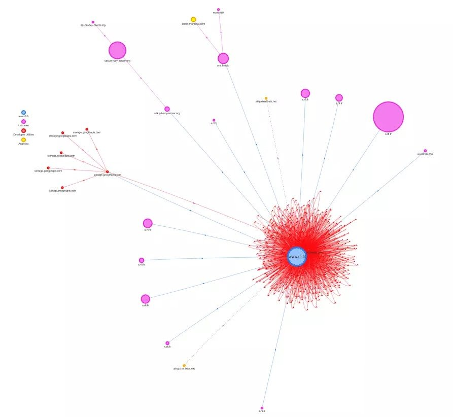
RequestMap of the rfi.fr homepage
France 24
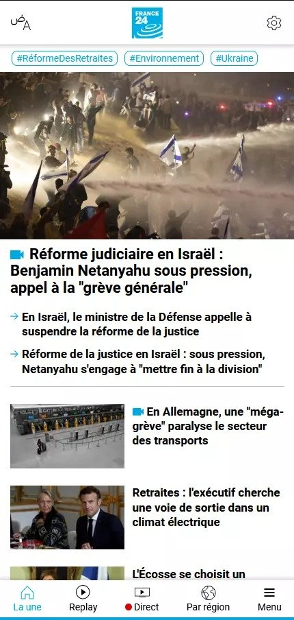
The structure and the findings are similar for this page.
We are indeed, as for the site of France24 on sites resulting from France Médias Monde thus with a similar architecture and a similar structure.
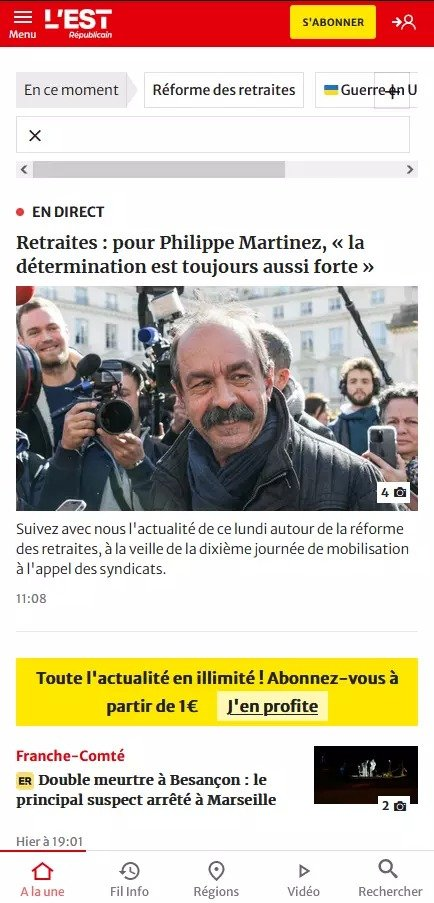
The site takes a long time to fully load because it makes a lot of requests to third party sites when the page loads. Moreover, it launches videos automatically. The content of the page is very long compared to other sites, which explains its ranking.
Conclusion for the flop 3 homepages
The main problem of the sites in the flop 3 is the number of requests. Especially made within the site itself and can slow down the loading of the page. In addition to that, we can deplore a lack of sobriety and sometimes even the automatic launch of videos.
Let’s move on to the articles.
The articles
Top 3 ( Less impactful articles)
1st
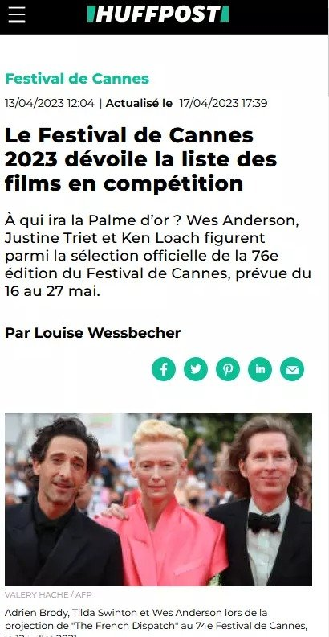
The general sobriety of the site is a good point that earned it its first place in the ranking. The site uses little video or image content in its articles and gradually loads the content on its page. But it is especially that unlike many press sites, Huffingtonpost does not have ads on its articles, and this is verified at the level of its third party services which are very few. This strongly reduces the impact of the site. Besides this, the font format used is good, but the site uses too many. It also generates too many files in JavaScript format used to format the site. Finally, there is a very impactful point which is to load a video and launch it automatically on a page. Thus, even the first place of this ranking can still strongly reduce its environmental impact.
2nd
Actu.fr
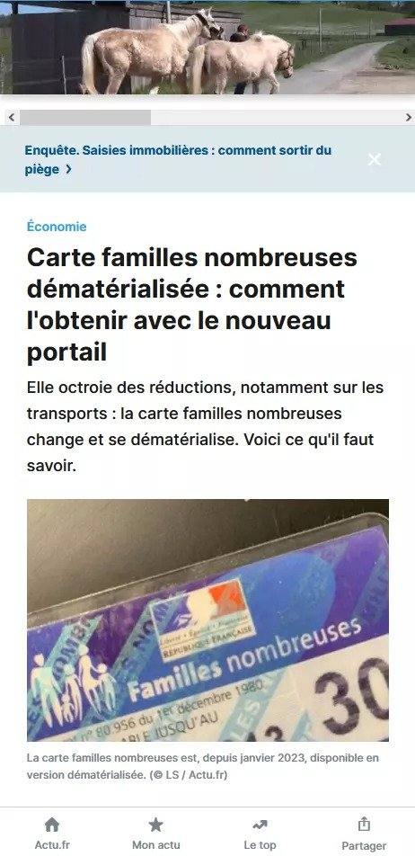
We find here the same optimizations as on the home page. However, the page is largely occupied by advertising, including a video that launches automatically. This last point is particularly problematic from the point of view of environmental impact and accessibility, in addition to harming the user experience.
Underneath the article, there is a lot of additional content, mostly advertising. There are more than 40 thumbnails leading to internal and external articles. Despite this, the majority of the requests are internal, which reduces the use of third-party services.
3rd
France Info
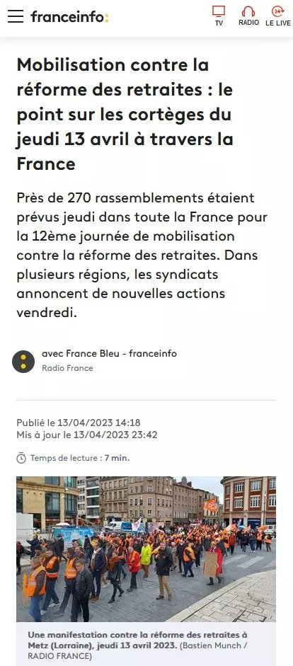
The article is at first sight quite sober, but the end of the article is made of a lot of images for the article recommendations. This number of images can easily be reduced but the images have at least the good point to be in Webp format which is among the least impacting image formats.
What allows to give this place to this article is the number of requests. Indeed, the site has few requests before the recommendations of articles compared to other press sites and loads gradually its page. Considering the number of requests, the number of third party services is rather significant but it remains reasonable compared to other news sites.
Conclusion for the top 3 articles
The articles in this Top 3 have in common that they don’t use many third party services and that they load progressively the content in order to limit the number of requests. The articles are rather sober but the additional content of recommendation weighs down these article pages.
Flop 3 (most impactful articles)
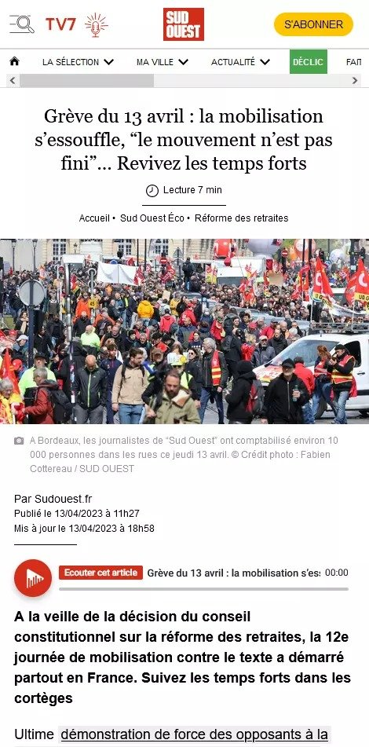
This article is long unlike many other articles in the ranking. However, if it is the most impactful of the ranking, it is because it uses a lot of images in JPEG and PNG format, JS and CSS scripts for formatting, fonts, and contains audio files, and ads. The site is not at all sober and uses a lot of requests and third party services.
The article contains a lot of images, scripts and links to other articles. These practices add to the environmental impact of the site. With this, the site uses a lot of requests and third party services. This increases the environmental impact but also reduces the performance of the site which takes longer to load. A good point to raise is the number of fonts used which is 1 and in woff2 format.
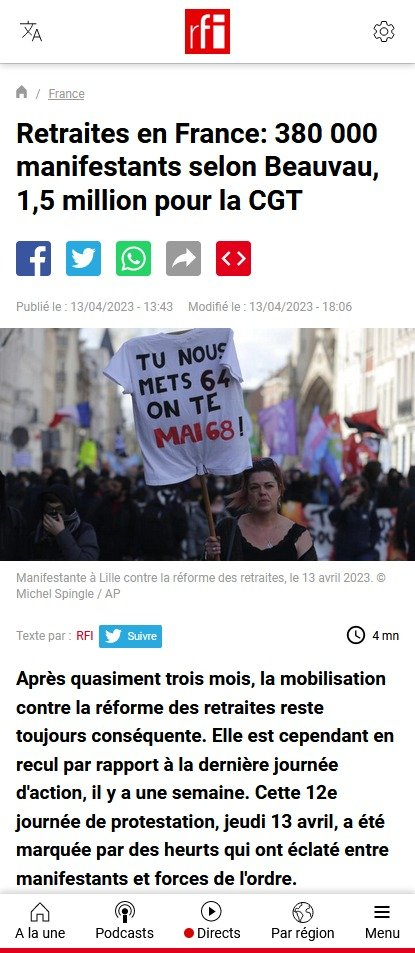
The article is sober because of its subscription system which hides a good part of it. There are few images but most of them are in png format which is not necessarily ideal from an efficiency point of view. However, we would like to point out that the most impactful image is in Webp format, which is one of the best compression formats. We find here a lot of requests and the multiplication of third party services.
Conclusion for the flop 3 articles
The main problem of the sites in the flop 3 is the number of requests, especially towards third party services. We can also add the lack of sobriety of these pages and question the functional needs.
Conclusion
When we look at the environmental impacts of online press sites, we can see that good efficiency practices are already widely adopted, especially regarding the management of images (which remain an essential vector to attract the Internet user and support the subject).
However, there are still efforts to be made to be more sober, in particular concerning the use of third-party services but also the use of video (and to a lesser extent fonts). As seen above, this is closely linked to the business model behind these newspapers. The model in question, beyond its considerable environmental impact, demonstrates once again its negative effects on the user experience, notably through the collection of personal data and the security risks that this may entail.
It is also worth noting that improvements to reduce the environmental impact of these sites would be all the more effective as some of them are read several hundred thousand times a day.
It would also be interesting to take a closer look at the accessibility of the sites in question (if this has not already been done), as this is fundamental for everyone to be able to access information related to current affairs (which is an essential part of a citizen’s life).
Discover our solutions